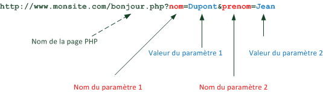

Guide PHP
L'objectif de ce chapitre est de découvrir les notions fondamentales liées au développement Web.

Note : ce chapitre s'inspire de la documentation du framework PHP Symfony.
Pour consulter un site Web sur Internet, il suffit de taper l'adresse correcte du site dans la barre d'adresse d'un navigateur Web, et le site s'affiche (si l'accès au réseau fonctionne). Nous allons tenter de comprendre ce qui se cache derrière cette opération très simple en apparence.
Pour être accessible, un site Web doit être publié sur un serveur. Un serveur est un type particulier d'ordinateur dont le rôle est d'attendre les demandes de clients, et d'y répondre. Un serveur rend un service à ses clients.
Il existe de nombreux types de serveurs, en fonction du service rendu : serveur de fichiers, de messagerie, d'authentification... Un serveur qui permet de publier des sites Web est appelé serveur Web.
Note : une même machine peut rendre différents services (exemple : serveur Web et serveur de fichiers).
Plus précisément, une machine serveur Web embarque et exécute un logiciel serveur, capable de répondre aux demandes de consultations de sites Web. Les logiciels serveurs Web les plus populaires sont Apache, Microsoft IIS et nginx.
La machine qui permet la consultation du site Web demandé est appelé client Web. Il s'agit d'un abus de langage : en réalité, le véritable client est un logiciel qui s'exécute sur cette machine et réalise l'opération de consultation. Ce logiciel est le plus souvent un navigateur Web (browser). Les navigateurs Web les plus populaires sont Internet Explorer, Mozilla Firefox, Chrome, Safari et Opera.
D'autres types de logiciels que les navigateurs peuvent jouer le rôle de clients Web en se connectant à des serveurs Web. Exemples : robots d'indexation, aspirateurs Web, applications mobiles, etc.
La compréhension des échanges ayant lieu entre un client et un serveur Web lors de la consultation d'un site est essentielle. Il s'agit d'un mécanisme de type requête/réponse.

- L'échange est initié par le client, qui envoie au serveur une requête pour consulter une ressource Web.
- Le serveur prépare la page HTML associée.
- Le serveur renvoie la page HTML au client, qui l'affiche.
Afin de se comprendre, client et serveur Web utilisent pendant leurs échanges un protocole commun : HTTP.
HTTP (HyperText Transfert Protocol) est le protocole de transfert du Web. C'est son invention en 1989 au CERN de Genève, en même temps que le langage HTML, qui a conduit à l'apparition du World Wide Web : un immense réseau de réseaux, où on peut "rebondir" d'une page Web à une autre en utilisant des liens sans avoir besoin de connaître l'emplacement physique des serveurs et des ressources consultés.
HTTP est fondamentalement un protocole très simple, basé sur des commandes textuelles.
Prenons comme exemple la première étape de l'échange décrit plus haut.
La requête HTTP envoyée par le navigateur prend une forme similaire à celle-ci :
GET / HTTP/1.1
Host: xkcd.com
Accept: text/html
User-Agent: Mozilla/5.0 (Macintosh)
La première ligne de cette requête HTTP est la plus importante. Elle contient :
- La méthode associée à la requête : ici,
GETsignifie une demande de ressource. - L'identifiant de la ressource concernée. Ici,
/(symbole de la racine, comme sous Linux) indique qu'on souhaite accéder au document par défaut. - La version du protocole HTTP, ici 1.1.
Les autres lignes de la requête HTTP sont appelés champs d'en-tête (HTTP header fields ou plus simplement headers). Ils précisent le site Web concerné (champ Host), les types de contenu acceptés par le client (champ Accept) et le logiciel client utilisé (champ User-Agent). Il existe d'autres champs d'en-tête, non présentés ici.
Les méthodes HTTP les plus fréquemment utilisées sont GET (pour récupérer une ressource depuis le serveur) et POST (pour modifier une ressource sur le serveur). Il en existe d'autres comme HEAD, PUT ou DELETE.
Lorsqu'il reçoit une requête HTTP, le serveur Web y puise les informations nécessaires pour construire la réponse, puis la renvoie au client. Continuons avec notre exemple précédent.
La réponse HTTP renvoyée du serveur au client prend l'aspect ci-dessous.
HTTP/1.1 200 OK
Date: Mon, 14 Apr 2013 14:05:05 GMT
Server: lighttpd/1.4.19
Content-Type: text/html
<html>
<!-- code HTML de la page -->
<!-- ... -->
</html>
La première ligne de la réponse contient son statut sous la forme d'un code qui indique le résultat de la requête. Comme une requête, une réponse HTTP contient des champs d'en-tête (Date, Content-Type et bien d'autres) permettant de véhiculer des informations additionnelles. Par exemple, il est possible d'utiliser certains champs pour mettre en place un mécanisme de cache.
Enfin, la réponse HTTP contient éventuellement la ressource demandée par le client. Le plus souvent, il s'agit d'une page Web décrite sous la forme de balises HTML.
Les codes de retour HTTP peuvent être classés par familles en fonction du premier chiffre.
| Famille | Signification | Exemples |
|---|---|---|
| 1xx | Information | |
| 2xx | Succès | 200 : requête traitée avec succès |
| 3xx | Redirection | |
| 4xx | Erreur provenant du client | 400 : syntaxe de la requête erronée 404 : ressource demandée non trouvée |
| 5xx | Erreur provenant du serveur | 500 : erreur interne du serveur 503 : service temporairement indisponible |
Vous trouverez sur Wikipedia plus de détails sur le protocole HTTP.
On a l'habitude d'accéder à un site Web en utilisant son adresse. Celle-ci est de la forme : http://www.monsite.fr/mondossier/mapage.html. On peut décomposer cette adresse en plusieurs sous-parties.
http://signifie qu'on utilise le protocole HTTP.www.monsite.frest le nom de domaine du site Web visité./mondossier/mapage.htmlest le chemin de la ressource demandée au sein du site.
La majorité des serveurs Web est configurée pour renvoyer une page par défaut (index.html, index.php, Default.aspx) lorsque le client ne précise pas explicitement quelle page il souhaite récupérer (exemples : http://www.monsite.fr ou http://www.monsite.fr/mondossier/).
Une adresse Web telle que celle ci-dessus est ce qu'on appelle une URL ou Uniform Resource Locator. Elle permet de décrire l'emplacement d'une ressource Web et le moyen d'y accéder.
Les tous premiers sites Web créés dans les années 1990 étaient composés uniquement de pages HTML (pour le contenu) et de fichiers CSS (pour la mise en forme du contenu), et éventuellement d'autres types de ressources comme par exemple des images.
La consultation d'un site Web statique met en jeu deux logiciels :
- Le logiciel client, le plus souvent un navigateur Web.
- Le logiciel serveur Web.
Lorsqu'un client envoie une requête au serveur Web hébergeant un site statique, le serveur se contente de renvoyer la ressource demandée. Les pages HTML affichées ne peuvent pas évoluer automatiquement, d'où le terme "statique".

L'accès à un site Web statique est un exemple d'architecture client/serveur,
La mise à jour d'un site Web statique nécessite l'édition des fichiers sources, puis la mise en ligne des modifications (publication sur le serveur Web).
L'explosion de la popularité du Web au début des années 2000 a provoqué l'appatition de nouveaux besoins et conduit à l'émergence des sites Web dynamiques. A l'inverse d'un site statique, un site dynamique est un type de site Web dans lequel le contenu des pages est construit au moment de la requête du client.
Lorsqu'un client envoie une requête au serveur Web hébergeant un site dynamique, le serveur prépare la page HTML correspondant à cette requête, puis la renvoie au client pour affichage. Les pages Web affichées au visiteur ne sont pas figées comme dans le cas d'un site statique, mais générées au moment de leur consultation.
Important : Le résultat renvoyé par le serveur Web et affiché par le client est toujours une page HTML.
Contrairement à un site statique, un site dynamique ouvre la voie à des interactions quasiment illimitées avec ses visiteurs : identification, échange de données entre site et utilisateur, mise à jour du site par ses utilisateurs ("Web 2.0")... Parmi les nombreux exemples de sites Web dynamiques, on peut citer les sites de e-commerce, CMS (Content Management System ou systèmes de gestion de contenu) , wikis, forums...
Pour créer un site Web dynamique. il faut obligatoirement utiliser un langage capable de générer des pages HTML. Le diagramme ci-dessous rassemble les principaux langages capables de réaliser cette tâche.

On constate que la technologie la plus populaire est PHP, suivie de loin par ASP.NET (Microsoft) et Java (ORACLE). Les technologies ASP.NET et Java sont plus souvent employées pour des sites complexes avec d'importants besoins en matière de performances et de montée en charge. Ces sites sont assez peu nombreux, d'où la domination globale de PHP.
Note : cela ne veut pas dire que le langage PHP ne puisse pas, lui aussi, être employé dans des contextes exigeants.
PHP est particulièrement dominant dans le secteur des CMS, ces logiciels qui permettent de publier du contenu en ligne sans presque aucune connaissance technique. On peut citer comme exemples Wordpress, Drupal ou Joomla. La position dominante de PHP s'explique également par la richesse de son écosystème : librairies, frameworks, etc.
Quelle que soit la technologie mise en oeuvre, il est essentiel de bien comprendre que ces langages sont toujours employés côté serveur Web et jamais côté client (d'où le terme de langages "serveur"). Un navigateur Web ne sait pas exploiter directement une page PHP ou ASP.NET. En revanche, il sait afficher une page HTML qu'un serveur Web aura préalablement générée en utilisant PHP ou ASP.NET.
L'objectif de ce chapitre est de découvrir les bases du langage PHP.
Le code PHP est écrit dans des fichiers source portant l'extension .php. Le plus souvent, un fichier source PHP contient un mélange de balises HTML et de code PHP. Au moment où un client demande ce fichier à un serveur Web, le code PHP est exécuté par le serveur pour produire dynamiquement une page Web.
Attention : un fichier contenant du code PHP mais portant l'extension .html sera renvoyé directement par le serveur sans exécution du code PHP qu'il contient.
Il est fortement conseillé d'adopter le standard HTML5 ainsi que le jeu de caractères Unicode UTF-8 (sans BOM). Tous les fichiers source doivent être encodés avec ce jeu de caractères pour que les caractères accentués soient affichés correctement, et la structure HTML doit être identique à celle ci-dessous.
<!doctype html>
<head lang="fr">
<meta charset="utf-8" />
...
</head>
<body>
...
</body>
</html>
Dans un fichier source PHP, on définit une portion de code PHP gràce aux balises <?php et ?>. Il est possible de définir plusieurs blocs de code dans un même fichier source PHP. A l'intérieur d'un bloc de code, on peut utiliser les fonctionnalités du langage. Chaque instruction doit se terminer par le symbole ;.
<!doctype html>
<html lang="fr">
<head>
<meta charset="utf-8" />
<title>Ma première page PHP</title>
</head>
<body>
<h1>Affichons du texte avec PHP...</h1>
<h3>Ce titre est écrit directement en HTML</h3>
<h3>Celui-ci contient une partie <?php echo "générée avec PHP"; ?></h3>
<h3><?php echo "Celui-là est entièrement généré avec PHP"; ?></h3>
</body>
</html>
L'affichage de texte s'effectue grâce à la commande echo.
<?php echo "Bonjour Monde !"; ?>
On peut inclure des balises HTML dans le texte affiché par echo, ou bien inclure l'appel à echo dans des balises HTML. Ainsi, les deux appels suivants produisent exactement le même résultat.
<?php echo "<p>Bonjour Monde !</p>"; ?>
<p><?php echo "Bonjour Monde !"; ?></p>
Conseil : sauf cas particulier, on utilisera plutôt la seconde technique, qui préserve mieux la structure HTML de la page.
Note : il existe une syntaxe plus concise pour afficher du texte. Le code PHP <?= "Hello" ?> équivaut à <?php echo "Hello"; ?>.
A l'intérieur d'un bloc de code PHP, on peut ajouter des commentaires avec les symboles communs à de nombreux langages de programmation : // pour un commentaire sur une seule ligne et /* ... */ pour un commentaire sur plusieurs lignes.
A l'extérieur d'un bloc PHP, on utilise la syntaxe HTML <!-- ... --> pour ajouter des commentaires.
<h1>Affichons du texte avec PHP...</h1> <!-- un commentaire HTML -->
...
<h3><?php echo "Celui-là est entièrement généré avec PHP"; ?></h3>
// un commentaire PHP ?>
Un fichier PHP peut inclure le contenu d'un autre fichier grâce à l'instruction include.
<?php include "monfichier.php"; ?>
Au moment de l'exécution, cette instruction sera remplacée par le contenu du fichier inclus.
Cette technique permet de centraliser le code des éléments communs à plusieurs fichiers PHP, comme par exemple des menus ou des pieds de page, pour éviter la duplication de code.
<!doctype html>
<html lang="fr">
<head>
<meta charset="utf-8" />
<title>Une page PHP modulaire</title>
</head>
<body>
<?php include "header.php"; ?>
<?php include "menu.php"; ?>
<!-- ... (contenu spécifique) -->
<?php include "footer.php"; ?>
</body>
</html>
Une autre instruction PHP, require, joue le même rôle avec la différence suivante : contrairement à include, require déclenche une erreur si le fichier à inclure est introuvable.
<?php require "monfichier.php"; ?>
Note : il existe aussi des instructions include_once et require_once qui vérifient si le fichier a déjà été inclus, et si c'est le cas, ne l'incluent pas une deuxième fois.
L'objectif de ce chapitre est de savoir utiliser les structures de bases de la programmation avec le langage PHP.
Une variable joue en PHP le même rôle que dans tout autre langage : stocker une information. Une variable PHP est définie par un nom qui commence obligatoirement par le symbole $.
<?php $message = "Bonjour Monde !";
echo $message; ?>
On remarque au passage que la variable $message n'a pas un type explicite comme string ou int. PHP n'impose pas au programmeur de définir les types des variables. On parle de typage dynamique.
Après sa définition, une variable PHP est utilisable à n'importe quel endroit de la page, même dans un autre bloc de code.
<?php $message = "Bonjour Monde !"; ?>
<h1>Un titre</h1>
<h2>Un sous-titre</h2>
<p><?php echo $message; ?></p>
Les chaînes de caractères PHP sont délimitées par des guillemets doubles "..." ou par des guillemets simples '...'. Il est possible de concaténer (assembler) plusieurs chaînes de caractères au moyen du symbole ..
<?php echo "Bonjour" . " " . "Monde !"; ?>
<?php echo 'Bonjour' . ' ' . 'Monde !'; ?>
Chaque ligne ci-dessus affiche Bonjour Monde !.
La différence entre guillemets simples et doubles apparaît lorsqu'on inclut une variable dans une chaîne de caractères.
<?php $age = 39; ?>
<p><?php echo "Vous avez $age ans"; ?></p>
<p><?php echo 'Vous avez $age ans'; ?></p>
Le premier echo affiche : Vous avez 39 ans. Le second echo affiche : Vous avez $age ans.
Lorsqu'on utilise des guillemets doubles pour définir une chaîne de caractères, les variables sont interprétées (remplacées par leur valeur). Ce n'est pas le cas avec des guillemets simples.
Dans un programme, on souhaite fréquemment agir en fonction du résultat d'une condition. Les traitements à effectuer peuvent être différents selon que la condition soit vraie ou fausse. En PHP, une alternative s'exprime grâce à l'instruction if éventuellement associée à une instruction else,. Elle permet de conditionner des traitements en fonction de certains critères. On parle parfois de branchement logique. Pendant l'exécution, les instructions exécutées seront différentes selon la valeur de la condition. Un seul des deux blocs d'instructions sera pris en compte.
<?php
if ($nb1 > $nb2) {
// sera exécuté si $nb1 > $nb2
}
else {
// sera exécuté si $nb1 <= $nb2
}
?>
Il est possible de placer une instruction if à l'intérieur d'un bloc d'une autre instruction if. C'est ce qu'on appelle imbriquer des conditions. Attention à toujours bien refléter l'imbrication des blocs en décalant les instructions associées dans le code source : c'est ce qu'on appelle l'indentation.
Si la seule opération réalisée dans un bloc else est un if, on peut également employer l'instruction elseif, plus concise.
<?php
if ($nb1 > $nb2) {
// sera exécuté si $nb1 > $nb2
}
elseif ($nb2 > $nb1) {
// sera exécuté si $nb1 < $nb2
}
else {
// sera exécuté si $nb1 = $nb2
}
?>
Une autre syntaxe possible de l'instruction if est la suivante :
<?php
if($a > $b):
// sera exécuté si $a > $b
elseif($a == $b):
// sera exécuté si $a == $b
else:
// sera exécuté si $a est plus petit que $b
endif;
?>
Cette syntaxe, que l'on retrouve dans le code source de certains CMS, peut être pratique pour repérer plus facilement la fin des conditions (endif; au lieu de } ) lorsque le code PHP englobe de grandes portions de code HTML.
L'instruction if est associée à une condition. C'est une expression (une combinaison de variables, de valeurs et d'opérateurs) dont l'évaluation donne la valeur vraie (true) ou la valeur faux (false). On parle d'expression booléenne.
Toute expression renvoyant une valeur booléenne peut être utilisée comme condition avec un if. C'est le cas des expressions utilisant des opérateurs de comparaison, dont voici la liste.
| Opérateur | Signification |
|---|---|
| == | Egal à |
| != | Différent de |
| < | Inférieur strictement |
| <= | Inférieur ou égal |
| > | Supérieur strictement |
| >= | Supérieur ou égal |
Note : la plupart des langages de programmation utilisent le symbole = pour symboliser l'affectation, et le symbole == pour l'égalité. Attention aux confusions avec le sens mathématique de l'opérateur =.
On peut définir des conditions plus complexes ("La valeur de X est entre 100 et 200") grâce aux opérateurs logiques. Ceux du langage PHP sont les suivants :
&&(Et),||(Ou),!(Non),- il existe aussi
andetor.
Si and est utilisé avec &&, && sera prioritaire. De même que || sera prioritaire sur or.
Il existe aussi l'opérateur xor correspondant au Ou exclusif, c'est-à-dire qu'il vérifie qu'une des deux conditions qu'il sépare est vraie, mais pas les deux à la fois.
L'instruction switch déclenche l'exécution d'un bloc d'instructions parmi plusieurs possibles. Seul le bloc correspondant à la valeur testée sera pris en compte.
<?php
switch ($nombre) {
case 1:
...
break; // break force la sortie du switch
case 2:
...
break;
case 3:
...
break;
default:
...
break;
}
?>
Il n'y a pas de limite au nombre de cas possibles. Le mot-clé default, à placer en fin de switch, est optionnel. Il sert souvent à gérer les cas d'erreurs.
Les instructions break; dans les blocs case sont indispensables pour éviter de passer d'un bloc à un autre.
Un tableau permet de regrouper plusieurs données. On obtient la taille (nombre d'éléments) d'un tableau grâce à l'instruction PHP count.
On accède aux éléments d'un tableau en utilisant leur indice, un entier qui commence à 0 et non à 1.
<?php
$langages = array('C#', 'PHP', 'HTML');
$nbLangages = count($langages);
echo "Je connais $nbLangages langages de programmation";
?>
<ul>
<li><?php echo $langages[0]; ?></li>
<li><?php echo $langages[1]; ?></li>
<li><?php echo $langages[2]; ?></li>
</ul>
L'instruction PHP var_dump() permet d'afficher l'ensemble du contenu du tableau. Elle est utile pour déboguer un script.
<p>Affichage direct du tableau :
<?php var_dump($langages); ?></p>
Un tableau associatif, parfois appelé dictionnaire, joue le même rôle qu'un tableau, mais on accède à ses éléments grâce à une chaîne de caractères (appelée clé) et non un entier.
<?php
$client = array(
"Nom" => "Annie ZETTE",
"Ville" => "Lyon",
"Courriel" => "annie@zette.fr"
);
$nbChamps = count($client);
echo "Le tableau client contient $nbChamps champs";
?>
<ul>
<li><?php echo $client["Nom"]; ?></li>
<li><?php echo $client["Ville"]; ?></li>
<li><?php echo $client["Courriel"]; ?></li>
</ul>
Une structure répétitive, également appelée structure itérative ou encore boucle, permet de répéter plusieurs fois l'exécution d'une ou plusieurs instructions. Le nombre de répétitions peut :
- être connu à l'avance.
- dépendre de l'évaluation d'une condition.
A chaque répétition, les instructions contenues dans la boucle sont exécutées. C'est ce qu'on appelle un tour de boucle ou encore une itération.
La boucle while permet de répéter des instructions tant qu'une condition est vérifiée.
<?php
$i = 0;
while ($i < 10) {
...
$i++;
}
?>
Avant chaque tour de boucle, la condition associée au while est évaluée :
Si elle est vraie, les instructions du bloc while sont exécutées. Ensuite, la ligne du while est à nouveau exécutée et la condition vérifiée.
Si elle est fausse, les instructions du bloc ne sont pas exécutées et le programme continue juste après le bloc while.
Attention : il faut absolument que la condition de la boucle while puisse devenir fausse. Dans le cas contraire, on obtient une boucle infinie qui ne s'arrête jamais.
La boucle for permet de répéter un bloc d'instructions un nombre défini de fois.
<?php
for ($i = 0; $i < 10; $i++) {
...
}
?>
Voici son fonctionnement :
- L'initialisation se produit une seule fois, au début de l'exécution.
- La condition est évaluée avant chaque tour de boucle. Si elle est vraie, un nouveau tour de boucle est effectué. Sinon, la boucle est terminée.
- L'étape est réalisée après chaque tour de boucle.
La variable utilisée dans l'initialisation, la condition et l'étape est appelée le compteur de la boucle. Par convention, elle est souvent nommée i.
La boucle foreach est principalement utilisée pour parcourir un tableau (associatif ou non).
<?php
$langages = array('C#', 'PHP', 'HTML');
foreach($langages as $langage) {
echo "$langage<br>";
}
?>
Attention : ne pas confondre la variable qui représente le tableau (ici $langages, écrite au pluriel) et la variable qui représente l'élément courant dans la boucle (ici $langage).
Le parcours d'un tableau associatif avec une boucle foreach permet d'obtenir la liste des clés et des valeurs associées.
<?php
$client = array(
"Nom" => "Annie ZETTE",
"Ville" => "Lyon",
"Courriel" => "annie@zette.fr"
);
?>
<ul>
<?php foreach($client as $cle => $valeur) { ?>
<li><?php echo $cle . ' : ' . $valeur ?></li>
<?php } ?>
</ul>
Les fonctions permettent de centraliser une portion de code utilisée régulièrement.
Le langage PHP dispose d'une large biblothèque de fonctions prédéfinies. En voici quelques exemples :
-
countpermet de renvoyer la taille d'un tableau. -
daterenvoie une date/heure qu'on peut ensuite formater pour affichage. -
issetvérifie si une variable existe ou non. -
strlenrenvoie le nombre de caractères d'une chaîne.
<?php
$langages = array('C#', 'PHP', 'HTML');
$nbLangages = count($langages);
if (isset($a) == false) {
...
}
$date = date("d-m-Y H:i:s");
$msg = "Hello there";
$longueurMsg = strlen($msg);
?>
Il est possible et souvent utile de définir ses propres fonctions PHP. Cela permet de décomposer un problème à résoudre en sous-parties plus simples, parfois réutilisables.
Lorsque qu'on a besoin d'utiliser une fonction, on effectue un appel à celle-ci. Cet appel provoque un "branchement" vers la fonction, qui s'exécute. Une fois l'exécution de la fonction terminée, le contrôle revient au niveau de l'appelant et l'exécution se poursuit.
Les paramètres utilisés dans la définition du sous-programme sont appelés paramètres formels. Au moment de l'exécution, leur valeur devient celle des variables utilisés pour l'appel, appelées paramètres effectifs ou encore arguments.
<?php
// $a et $b sont les paramètres de la fonction
function multiplier($a, $b) {
return $a * $b;
}
$nb1 = 3;
$nb2 = 7.5;
// $nb1 et $nb2 sont les arguments de l'appel de la fonction
$resultat = multiplier($nb1, $nb2);
// La variable $resultat vaut maintenant 22.5
?>
Attention : en PHP, une variable définie à l'extérieur d'une fonction n'est pas accessible dans le corps de cette fonction. Il s'agit d'une différence importante avec la plupart des autres langages de programmation.
<?php
$a = 1;
function test() {
echo '$a vaut ' . $a; // $a n'existe pas dans ce contexte
}
test(); // Affiche uniquement "$a vaut "
?>
Le plus souvent, on externalise la définition des fonctions dans un fichier dédié qui est inclus dans la page utilisant la fonction.
<?php include 'fonctions.php'; ?>
L'objectif de ce chapitre est de connaître les différents moyens de faire passer des informations d'une page PHP à l'autre, ce qui est un besoin fréquent lorsqu'on crée un site Web.
Une variable superglobale est une variable PHP particulière créée par le langage et non par le développeur. Elle a comme particularité d'être disponible partout dans le code (d'où son nom). La plupart du temps, elle commence par le symbole $_. Une variable superglobale s'utilise comme un tableau associatif : elle associe des clés et des valeurs.
Les informations transmises entre pages PHP sont memorisées dans des variables superglobales particulières que nous allons maintenant découvrir.
Une URL représente l'adresse d'une page web et commence par http:// ou https://. Lorsqu'on fait un lien vers une autre page, il est possible d'ajouter des paramètres sous la forme bonjour.php?nom=Dupont&prenom=Jean qui seront transmis à la page.

On peut transmettre autant de paramètres que l'on veut dans une URL, la seule limite étant de ne pas dépasser une longueur totale de 256 caractères.
Dans ce cas, la page bonjour.php recevra ces paramètres dans la variable superglobale $_GET et défini automatiquement par PHP :
-
$_GET['nom']aura pour valeurDupont; -
$_GET['prenom']aura pour valeurJean.
Avant d'utiliser un paramètre transmis dans l'URL, on doit utiliser la fonction isset qui permet de vérifier si ce paramètre est défini ou non.
if (isset($_GET['nom']) {
// Utilisation de $_GET['nom']
// ...
}
Si un paramètre provenant de l'URL est destiné à être affiché dans la page HTML générée par PHP (exemple : <?php echo $_GET['nom']; ?>), il faut également prendre une précaution supplémentaire pour éviter certaines failles de sécurité (voir plus loin).
Les formulaires sont le moyen le plus pratique pour le visiteur de transmettre des informations à un site. PHP est capable de récupérer les données saisies par vos visiteurs et de les traiter.
On ajoute un formulaire à une page Web grâce à la balise HTML <form>.
<!doctype html>
<html>
<head>
<title>Mon premier formulaire</title>
<meta charset="UTF-8" />
</head>
<body>
<form action="login.php" method="post">
<p>Entrez votre login :
<input type="text" name="login" size="20" required /></p>
<p>Entrez votre mot de passe :
<input type="password" name="password" size="20" required /></p>
<input type="submit" value="Envoyer" />
</form>
</body>
</html>
La balise HTML <form> possède deux attributs importants :
-
actionpermet de définir l'URL cible qui traitera les informations soumises par le formulaire, lorsque l'utilisateur le validera en cliquant sur le bouton de typesubmit(ici "Envoyer"). -
methodpermet de définir le type de requête HTTP utilisée pour envoyer les données à l'URL d'action. Ici, ce sera une requêtePOST, le cas le plus fréquent avec les formulaires.
Note : on peut également utiliser la méthode GET avec un formulaire, mais dans ce cas les paramètres seront visibles dans l'URL et on court le risque de dépasser la taille maximale de 256 caractères.
A l'intérieur d'un formulaire, les balises HTML <input> permettent de définir des champs de saisie pour l'utilisateur.
L'attribut name d'une balise <input> définit le nom de la variable qui contiendra la valeur saisie.
La variable peut aussi être un tableau, ce qui est d'ailleur plus utile pour la traiter. Le tableau est mon_champ dans l'exemple suivant :
// ...
<p>Entrez votre login :
<input type="text" name="mon_champ[login]" size="20" required /></p>
<p>Entrez votre mot de passe :
<input type="password" name="mon_champ[password]" size="20" required /></p>
// ...
Lorsque l'utilisateur soumet un formulaire, la ressource identifiée par l'attribut action de la balise <form> reçoit les données du formulaire et peut les traiter.
Si le formulaire est soumis avec la méthode POST, les données envoyées via un formulaire sont ajoutées dans le corps de la requête HTTP et se retrouvent dans un tableau associatif nommé $_POST défini automatiquement par PHP.
- Les clés de ce tableau sont les noms des champs du formulaire (attributs
namedes balises<input>du formulaire). - Les valeurs associées aux clés sont les données saisies par l'utilisateur dans chaque champ.
// récupération des zones de saisie dans des variables
$login = $_POST["login"];
$mdp = $_POST["password"];
// ...
// ...
// Autre exemple récupération des zones de saisie dans une variable tableau
$login = $_REQUEST['mon_champ']['login'];
$mdp = $_REQUEST['mon_champ']['password'];
// ...
Remarque : pour indifférencier la méthode d'envoie, c'est-à-dire POST ou GET, il est preférable d'utiliser le tableau associatif nommé $_REQUEST.
Debogage : à des fins de débogage, on peut afficher le contenu de $_POST en ajoutant une instruction var_dump($_POST).
Note : rien n'empêche une page PHP intégrant un formulaire d'être définie comme cible de ce formulaire par l'attribut action
(on parle parfois de page réentrante). Dans ce cas, cette page doit être capable aussi bien d'afficher le formulaire que de traiter ses données. On fait la distinction en testant le contenu de la variable
$_POST, le plus souvent en début de page.
Attention : cette methode ne fait partie des bonnes pratiques, nous verrons avec le pattern MVC comment la contourner.
if (isset($_POST['login'] && isset($_POST['password']) {
// Le formulaire a été soumis : récupération des informations
$login = $_POST["login"];
$mdp = $_POST["password"];
// ...
}
else {
// Le formulaire n'a pas été soumis
// ...
}
// Code commun aux deux situations
// ...
L'attribut type d'une balise <input> permet de préciser le type de donnée à saisir.
- Pour faire saisir un texte court (une seule ligne), on utilise une balise
<input type="text" ...>. On peut définir la valeur initiale du champ en ajout l'attributvalue. L'attributsizepermet de préciser la taille (nombre de caractères) du champ de saisie.
<input type="text" name="prenom" value="Baptiste" size="20" />
- Pour faire saisir un mot de passe, on utilise une balise
<input type="password" ...>. Dans ce cas, le navigateur masque les caractères saisis par l'utilisateur.
<input type="password" name="mdp" />
- Pour faire saisir un texte plus long (plusieurs lignes), on utilise une balise
<textarea>. La balise fermante</textarea>est obligatoire et l'éventuelle valeur initiale est ajoutée entre les balises ouvrante et fermante. L'attributrowsest utilisé pour préciser le nombre le lignes de la zone de saisie.
<textarea name="message" rows="6">Entrez votre message</textarea>
- Pour faire saisir une donnée n'ayant que deux valeurs possibles, on utilise une balise
<input type="checkbox" ...>. L'attributchecked, s'il est présent, précise que la case est cochée par défaut.
<input type="checkbox" name="familier" checked />
Lors de la récupération des données du formulaire, on vérifie l'état de la case (cochée ou non) à l'aide de la fonction isset.
if (isset($_POST["familier"])) {
// La case est cochée
else {
// La case est décochée
}
- Pour faire saisir un choix parmi plusieurs, on utilise des balises
<input type="radio" ...>ayant la même valeur pour l'attributname. On crée ainsi une série de boutons radios dont seul l'un pourra être sélectionné par l'utilisateur.
<input type="radio" name="politesse" value="1" checked /> Mademoiselle<br />
<input type="radio" name="politesse" value="2" /> Madame<br />
<input type="radio" name="politesse" value="3" /> Monsieur<br />
Lors de la récupération des données du formulaire, on examine la valeur du champ. Cette valeur correspond à l'attribut value du bouton sélectionné.
$message = "Bonjour, ";
switch($_POST["politesse"])
{
case 1:
$message = $message . " Mademoiselle.";
break;
case 2:
$message = $message . " Madame.";
break;
case 3:
$message = $message . " Monsieur.";
break;
}
- Une autre possibilité pour faire saisir un choix parmi plusieurs est de définir une liste déroulante grâce à une balise
<select>. A l'intérieur de cette balise, on ajoute des choix possibles grâce à la balise<option>. L'attributsizede la balise<select>définit le nombre d'éléments affichés par la liste. L'élément sélectionné par défaut est indiqué par l'attributselected.
<select name="catpro" size="1">
<option value="CP1" selected> Etudiant</option>
<option value="CP2"> Salarié</option>
<option value="CP3"> Cadre</option>
</select>
Lors de la récupération des données du formulaire, on examine la valeur du champ pour trouver l'élément qui a été sélectionné. Cette valeur correspond à l'attribut value de l'élément choisi.
$codecat = $_POST["catpro"];
if ($codecat == "CP1") $categorie = "Etudiant";
elseif ($codecat == "CP2") $categorie = "Salarié";
elseif ($codecat == "CP3") $categorie = "Cadre";
Deux attributs des balises de saisie permettent d'aider l'utilisateur du formulaire dans sa saisie :
-
autofocus(booléen) place le curseur de saisie sur le champ au chargement du formulaire. -
placeholderdéfinit le contenu par défaut du champ.
La norme HTML5 a apporté de nouveaux types de champs comme email, number ou date.
<input type="email" name="courriel" />
Les navigateurs modernes interprètent ce type pour :
- Améliorer l'expérience utilisateur pendant la saisie (exemple : un calendrier déroulant pour un champ de type
date). - Valider la saisie avant envoi de la requête au serveur (exemple : vérification de la présence d'un
@pour un champ de typeemail).
Il est également possible de rendre un champ obligatoire grâce à l'attribut booléen required.
<input type="email" name="courriel" required />
Malgré tout, la validation finale des valeurs saisies dans un formulaire doit toujours se faire aussi côté serveur (par exemple avec PHP) pour des raisons de sécurité.
Vous pouvez consulter la documentation complète de la balise <input> sur cette page.
Les formulaires permettent également d'envoyer des fichiers. Pour faire choisir un fichier, on utilise une balise <input type="file" ... >. Il faut également ajouter l'attribut enctype="multipart/form-data" à la balise <form>.
<form enctype="multipart/form-data" action="upload.php" method="post">
...
<input type="file" name="image"/>
...
</form>
On retrouve les informations sur les fichiers envoyés dans un tableau associatif nommé $_FILES. Chaque fichier envoyé correspond à un élément de ce tableau, et est lui-même un tableau associatif contenant les informations sur le fichier : nom, type, taille, etc.
Pour gérer le transfert du fichier vers le serveur, on utilise les fonctions PHP is_uploaded_file, basename et move_uploaded_file. Par exemple, le code suivant télécharge dans le répertoire images/ du serveur le fichier choisi avec la balise <input> nommée image.
$tmpFile = $_FILES['image']['tmp_name'];
if (is_uploaded_file($tmpFile)) {
$image = basename($_FILES['image']['name']);
$uploadedFile = "images/$image";
move_uploaded_file($_FILES['image']['tmp_name'], $uploadedFile);
}
Qu'elles soient issues de l'URL ($_GET) ou d'un formulaire ($_POST), il faut garder à l'esprit que les données reçues par une page PHP sont saisies par l'utilisateur, ce qui peut constituer une menace pour la sécurité du site. Rien n'empêche un utilisateur malveillant de saisir des données de manière à provoquer un comportement inattendu du site Web. C'est ce que l'on appelle l'injection de code.
Pour se prémunir contre ces risques, il faut appliquer un principe très important : ne jamais faire confiance aux données de l'utilisateur. Un développeur Web qui suppose que ses utilisateurs saisiront uniquement des informations appropriées et n'effectue aucun contrôle sur ces saisies prend le risque d'exposer son site à des attaques très faciles à réaliser.
Il existe deux principaux types d'injection de code :
- L'injection JavaScript dans une page HTML, appelé parfois XSS (Cross-Site Scripting).
- L'injection SQL dans une base données, dont nous parlerons dans un prochain chapitre.
Pour réaliser une injection de code JavaScript, un utilisateur va saisir un morceau de code JavaScript au lieu d'une valeur "normale".
<script type="text/javascript">alert('Miaou !')</script>
Si la valeur saisie est directement affichée par la page PHP, le résultat HTML généré contiendra un script JavaScript imprévu qui sera exécuté par le navigateur client. Cela peut potentiellement causer de gros problèmes de sécurité.
Un premier niveau de sécurité, qui doit devenir un réflexe, consiste à "nettoyer" toute donnée externe avant de l'utiliser pour générer une page Web. Il existe plusieurs fonctions PHP qui limitent fortement le risque d'injection de code JavaScript. Le choix le plus fréquent est la fonction htmlspecialchars. Cette fonction remplace certains caractères spéciaux par des entités HTML. Par exemple, le caractère < est remplacé par <. Cela permet de désactiver l'exécution du code contenu dans des balises <script>.
On peut intégrer l'appel à htmlspecialchars dans une fonction escape.
<?php
/**
* Nettoie une valeur insérée dans une page HTML
* Doit être utilisée à chaque insertion de données dynamique dans une page HTML
* Permet d'éviter les problèmes d'exécution de code indésirable (XSS)
* @param string $valeur Valeur à nettoyer
* @return string Valeur nettoyée
*/
function escape($valeur)
{
// Convertit les caractères spéciaux en entités HTML
return htmlspecialchars($valeur, ENT_QUOTES, 'UTF-8', false);
}
?>
Il faut toujours penser à utiliser cette fonction lors de l'insertion de données externes dans une page Web.
$prenom = $_GET["prenom"];
$nom = $_GET["nom"];
echo 'Bienvenue ' . escape($prenom) . ' ' . escape($nom) . ' !';
La variable superglobale $_SESSION permet de stocker des informations qui seront automatiquement transmises de page en page pendant toute la durée de visite d'un internaute sur un site.
La création d'une nouvelle session s'effectue en appelant la fonction session_start.
session_start();
// ...
Attention : cette fonction doit obligatoirement être appelée au tout début de la page, avant tout code HTML.
Une fois la session créée, on peut y ajouter de nouvelles variables identifiées par leur nom.
$_SESSION['prenom'] = 'Baptiste';
$_SESSION['age'] = 39;
Dans n'importe quelle page où la fonction session_start a été appelée, on peut utiliser $_SESSION pour accéder aux valeurs des variables de session. Il est prudent de vérifier au préalable que la variable existe, grâce à la fonction isset.
if (isset($_SESSION['prenom']) && isset($_SESSION['age'])) {
echo 'Je te connais toujours ! Tu es ' . $_SESSION['prenom'] .
' et tu as ' . $_SESSION['age'] . ' ans.';
}
else {
echo "Je ne te connais pas...";
}
En fin de visite, la destruction explicite d'une session se fait grâce à la fonction session_destroy. Après l'appel, la variable $_SESSION n'est plus utilisable.
Rappel : cette destruction est automatique au bout d'un certain temps d'inactivité.
Un cas d'utilisation très fréquent des sessions est l'authentification d'un utilisateur par login/mot de passe. En utilisant une session pour mémoriser ces paramètres, on peut "reconnaître" l'utilisateur sur toutes les pages du site, mais aussi restreindre certaines zones aux utilisateurs authentifiés : si la variable de session associée au login existe, on affiche le contenu, sinon on affiche une erreur.
Vous connaissez à présent les bases du langage PHP et vous savez transmettre des informations d'une page à une autre. Cependant, il nous reste à étudier le moyen de stocker des données de manière persistante. Ainsi, nous pourrons mémoriser les informations saisies par les utilisateurs, ou bien construire des pages dynamiques à partir des données externes.
Définition : une donnée est dite persistante lorsqu'elle survit à l'arrêt du logiciel ou de la machine qui la manipule. Le contraire de "persistante" est "volatile".
Actuellement, la technique la plus utilisée pour rendre des données persistantes consiste à les sauvegarder dans un logiciel dédié appelé SGBDR ou Système de Gestion de Bases de Données Relationelles. Parmi les SGBDR les plus connus, citons MySQL, PostgreSQL ou encore ORACLE.
Nous allons donc étudier comment interagir avec un SGBDR depuis une page PHP. Pour cela, nous allons utiliser une extension récente du langage PHP appelée PDO (Php Data Objects). Par rapport aux autres solutions existantes, PDO possède le double avantage d'être orientée objet et d'être indépendante du SGBDR utilisé.
Le schéma ci-dessous décrit l'architecture que nous allons mettre en oeuvre. Il s'agit d'un exemple d'architecture trois tiers (client, serveur Web, SGBD). Le rôle de PDO va être de faire le lien entre les pages PHP du serveur et les données stockées dans le SGBDR.

La connexion à une base de données depuis un fichier source PHP est réalisée de manière orientée objet, en instanciant un objet de la classe PDO par le biais de son constructeur.
$bdd = new PDO("mysql:host=localhost;dbname=mabase;charset=utf8",
"mabase_util", "mabase_mdp", array(PDO::ATTR_ERRMODE => PDO::ERRMODE_EXCEPTION));
Le constructeur utilisé ici comporte quatre paramètres :
- Le premier paramètre (
mysql:...) définit le nom de la source de données ou DSN, Data Source Name. Ce nom contient le nom et le type du SGBD (ici MySQL sur la machine locale,localhost), le nom de la base de données (icimabase) et le jeu de caractères utilisé (iciutf8). - Le deuxième paramètre (
mabase_util) est le login utilisé pour se connecter à la BD. Il doit auparavant avoir été créé au niveau du SGBDR. - Le troisième paramètre (
mabase_mdp) est le mot de passe associé au login. - Le quatrième paramètre (
array(PDO::...)) est relatif à la gestion des erreurs.
Note : il est déconseillé d'utiliser le login root ayant tous les droits pour se connecter à une base de données depuis du code PHP. Il vaut mieux créer dans MySQL un utilisateur dédié n'ayant des droits que sur cette base.
On peut traiter immédiatement les erreurs (base de données introuvable, mauvais login ou mot de passe, etc) en intégrant la connexion dans un bloc try/catch. Il s'agit d'un mécanisme de gestion des erreurs utilisant les exceptions. Sans rentrer dans des détails inutiles, son fonctionnement est le suivant :
- Les instructions situées dans le bloc
trysont exécutées. - Si l'une des instructions du bloc
tryprovoque une erreur, elle est interceptée par le bloccatch, dont les instructions sont alors exécutées. - Si aucune instruction du bloc
tryn'échoue, le contenu du bloccatchest ignoré et l'exécution se poursuit.
try {
$bdd = new PDO("mysql:host=localhost;dbname=mabase;charset=utf8", "mabase_util",
"mabase_mdp", array(PDO::ATTR_ERRMODE => PDO::ERRMODE_EXCEPTION));
}
catch (Exception $e) {
die('Erreur fatale : ' . $e->getMessage());
}
// ...
Si un problème se produit pendant la connexion, l'exécution PHP est interrompue (fonction die) et un message d'erreur est affiché. Sinon, le reste de la page est exécuté normalement.
La classe PDO dispose d'une documentation en ligne.
Une fois la connexion établie, il est possible d'utiliser l'objet instancié pour réaliser des opérations d'accès à la base. Pour cela, il faut écrire et exécuter des requêtes en utilisant le langage SQL.
La méthode query de la classe PDO permet d'exécuter une requête SQL simple (sans paramètres).
// ...
$requete = "select * from employe";
$resultat = $bdd->query($requete);
Le symbole -> est l'équivalent PHP du symbole . utilisé dans d'autres langages comme Java ou C#. L'instruction $bdd->query se lit : "J'appelle la méthode query sur mon objet $bdd".
Après l'appel à query, on peut parcourir le résultat ligne par ligne en appelant à la méthode fetch sur le résultat de la requête.
- Dans le cas d'une requête qui renvoie une seule ligne de résultat, un seul appel à
fetchsuffit. C'est notamment le cas lorsqu'on recherche un enregistrement à partir de sa clé primaire.
// ...
$requete = "select * from employe where id=1;";
$resultat = $bdd->query($requete);
$ligne = $resultat->fetch();
// On accède à la valeur de macolonne avec $ligne['macolonne'];
- Si la requête renvoie plusieurs lignes de résultats, on peut itérer sur ces lignes avec une boucle
whileou une boucleforeach.
// ...
$requete = "select * from employe";
$resultat = $bdd->query($requete);
// Itération sur les résultats de la requête SQL
while ($ligne = $resultat->fetch()) {
// On accède à la valeur de macolonne avec $ligne['macolonne'];
// ...
}
?>
// ...
$requete = "select * from employe";
$resultat = $bdd->query($requete);
// Récupération de tous les résultats de la requête dans un tableau
$donnees = $resultat->fetchAll();
// Itération sur le contenu du tableau
foreach ($donnees as $ligne) {
// On accède à la valeur de macolonne avec $ligne['macolonne'];
// ...
}
?>
Dans tous les cas, la variable $ligne s'utilise comme un tableau associatif. Elle rassemble les valeurs des différentes colonnes pour une ligne de résultat SQL.
Lorsque la requête SQL à exécuter comporte des paramètres, il faut utiliser une technique différente.
// ...
// Préparation de la requête : le ? correspond au paramètre attendu
$req = $bdd->prepare("select * from employe where servempl=?");
// On reçoit le code depuis un formulaire
$codeService = $_POST['service'];
// Exécution de la requête en lui passant le tableau des arguments
// (ici un seul élément : le code du service)
$req->execute(array($codeService));
Ce code source utilise ce qu'on appelle une requête préparée. Il s'agit d'une technique dans laquelle on définit d'abord le squelette de la requête (appel de la méthode prepare sur l'objet $bdd) en prévoyant ses différents paramètres, indiqués par des ? dans le code SQL. Ensuite, on exécute la requête préparée (méthode execute sur l'objet $req). Lors de cet appel, on passe les paramètres nécessaires sous la forme d'un tableau.
Avertissement : le tableau des paramètres doit contenir autant d'élément qu'il y a de ? dans la requête préparée. L'ordre doit également être respecté.
Outre le gain de temps lorsqu'une même requête est exécutée plusieurs fois avec des paramètres différents, l'utilisation d'une requête préparée évite de construire une requête SQL en y intégrant directement des données utilisateur.
// DANGEREUX : A EVITER ABSOLUMENT
$requete = "select * from employe where servempl=" . $_POST['service'];
La technique ci-dessus rend la base vulnérable aux attaques de type "injection SQL". L'injection SQL consiste à faire exécuter des requêtes SQL imprévues par le SGBDR, ce qui peut conduire à de graves problèmes de sécurité.

Ce risque de sécurité n'existe pas lorsqu'on utilise des requêtes préparées,
Note : ici, pas besoin de "nettoyer" la variable $_POST['service'] reçue du formulaire comme nous l'avions fait dans le chapitre précédent. L'appel à htmlspecialchars désactive l'exécution de code JavaScript mais ne présente aucun intérêt dans le cas de données utilisées dans des requêtes SQL.